vignettes/levi_guide.Rmd
levi_guide.Rmdlevi (Landscape Expression Visualization Interface) integrates gene expression data with biological network topology to produce a continuous landscape — a 2-D heatmap that reveals which regions of a network are collectively over- or under-expressed.
The core idea is that genes positioned close to each other in the network influence each other’s landscape score through normalised Gaussian convolution implemented in C++. A gene expressed in isolation contributes mainly to its own score; a gene that sits in a highly expressed neighbourhood contributes to the weighted average over that region.
Key features in this release:
| Feature | Function |
|---|---|
| Landscape computation | levi() |
| Interactive GUI | LEVIui() |
| Comparison builder | readExpColumn() |
| DESeq2 / edgeR / limma / Seurat adapters |
leviFromDESeq2() etc. |
| SummarizedExperiment adapter | leviFromSE() |
| STRING network retrieval | leviFromSTRING() |
| Side-by-side comparison | leviGrid() |
| Landscape subtraction | leviDiff() |
| GO / KEGG enrichment | leviEnrich() |
if (!requireNamespace("BiocManager", quietly = TRUE))
install.packages("BiocManager")
BiocManager::install("levi")
# Optional — needed for specific features
BiocManager::install(c(
"DESeq2", "edgeR", "limma", # DE adapters
"SummarizedExperiment", # leviFromSE
"STRINGdb", # leviFromSTRING
"clusterProfiler", "org.Hs.eg.db", # leviEnrich
"airway" # example dataset
))
install.packages(c("Seurat", "ggrepel", "patchwork", "plotly"))Each node (gene) in the network receives a landscape score in :
A single ratio column measures abundance/(abundance + 1), without a control.
The score is computed in three steps:
signal_mode) —
converts raw expression values to a signal in
.NA. Grid width is
as.integer((resolutionValueInput / 100) * 210 + 30) after
clipping the input to 1–100.readExpColumn() helper
readExpColumn("Test-Control") tells levi()
which columns of the expression file represent the test and control
conditions. Multiple comparisons produce one landscape per comparison
(batch mode):
# Single comparison
readExpColumn("TumorCurrentSmoker-NormalNeverSmoker")
#> [[1]]
#> readExpColumn
#>
#> [[2]]
#> [1] "TumorCurrentSmoker-NormalNeverSmoker"
# Two comparisons — levi() will return a list of two results
readExpColumn(
"TumorCurrentSmoker-NormalNeverSmoker",
"TumorFormerSmoker-NormalFormerSmoker"
)
#> [[1]]
#> readExpColumn
#>
#> [[2]]
#> [1] "TumorCurrentSmoker-NormalNeverSmoker"
#>
#> [[3]]
#> [1] "TumorFormerSmoker-NormalFormerSmoker"signal_mode determines how raw expression values are
converted to scores. Choose based on the scale of your data:
signal_mode |
Formula | Score 0.5 = | Best for |
|---|---|---|---|
"ratio" (default) |
Test / (Test + Control) | Test ≈ Control | Counts, TPM, FPKM, linear LFQ |
"logfc" |
1 / (1 + e^{−k · logFC}) | logFC = 0 | RMA, VST/rlog, log2-proteomics, scRNA-seq avg_log2FC |
"zscore" |
pnorm(z) | Mean logFC of support points | Relative position within a comparison |
logfc_k controls sigmoid steepness (default 1). Use
k = 0.5 for scRNA-seq (large FC values ±5) and
k = 2 for microarray (tight FC ±1).
logfc_net <- file.path(system.file(package="levi"), "extdata",
"logfc_network.dat")
logfc_expr <- file.path(system.file(package="levi"), "extdata",
"logfc_expression.dat")
base_call <- list(networkCoordinatesInput = logfc_net,
expressionInput = logfc_expr,
fileTypeInput = "dat",
geneSymbolInput = "ID",
readExpColumn = readExpColumn("Test-Control"),
contrastValueInput = 50,
resolutionValueInput = 20,
zoomValueInput = 50,
smoothValueInput = 5)
res_ratio <- do.call(levi, c(base_call, list(signal_mode = "ratio")))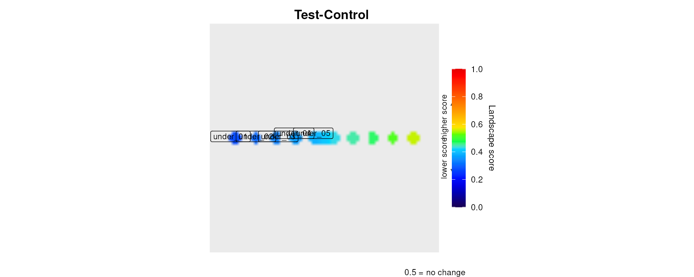
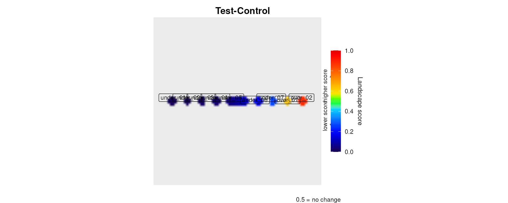
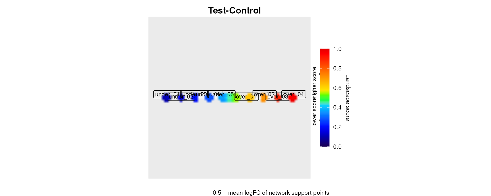
cat(sprintf(
"Score range ratio: %.3f | logfc: %.3f | zscore: %.3f\n",
diff(range(res_ratio$scores$LandscapeScore)),
diff(range(res_logfc$scores$LandscapeScore)),
diff(range(res_zscore$scores$LandscapeScore))
))
#> Score range ratio: 0.283 | logfc: 0.874 | zscore: 0.879Seven toy datasets ship with levi in
inst/extdata/. Each tests a specific aspect of the package
with known expected outcomes.
A 9-node star network where the central hub and close spokes are over-expressed and the outer corners are under-expressed.
hub_net <- file.path(system.file(package="levi"), "extdata",
"hub_network.dat")
hub_expr <- file.path(system.file(package="levi"), "extdata",
"hub_expression.dat")
res_hub <- levi(
networkCoordinatesInput = hub_net,
expressionInput = hub_expr,
fileTypeInput = "dat",
geneSymbolInput = "ID",
readExpColumn = readExpColumn("Test-Control"),
contrastValueInput = 50,
resolutionValueInput = 20,
zoomValueInput = 50,
smoothValueInput = 5,
contourLevi = TRUE
)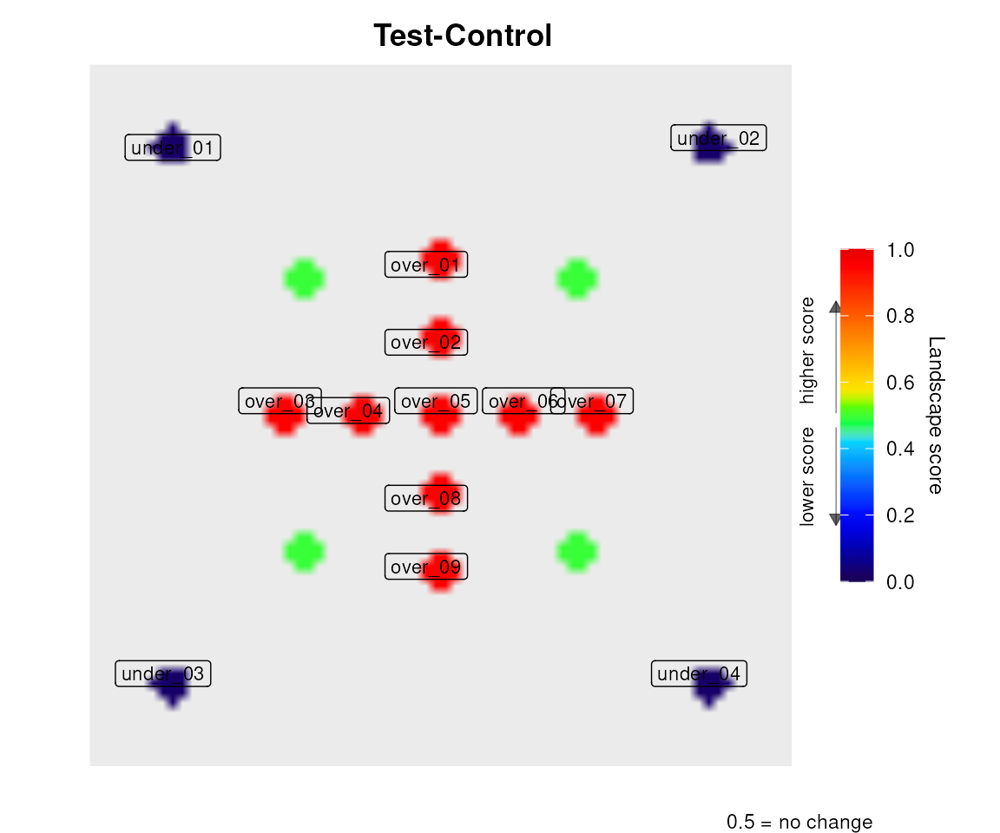
res_hub$scores[, c("Gene", "LandscapeScore", "Rank")]
#> Gene LandscapeScore Rank
#> 1 HUB 0.9524 1
#> 2 N1 0.9524 2
#> 3 N2 0.9524 3
#> 4 N3 0.9524 4
#> 5 N4 0.9524 5
#> 6 N5 0.0244 6
#> 7 N6 0.0244 7
#> 8 N7 0.0244 8
#> 9 N8 0.0244 9A 6-node linear chain with a monotone expression gradient. Verifies that landscape scores preserve strict rank order.
grad_net <- file.path(system.file(package="levi"), "extdata",
"gradient_network.dat")
grad_expr <- file.path(system.file(package="levi"), "extdata",
"gradient_expression.dat")
res_grad <- levi(
networkCoordinatesInput = grad_net,
expressionInput = grad_expr,
fileTypeInput = "dat",
geneSymbolInput = "ID",
readExpColumn = readExpColumn("Test-Control"),
contrastValueInput = 50,
resolutionValueInput = 20,
zoomValueInput = 50,
smoothValueInput = 5
)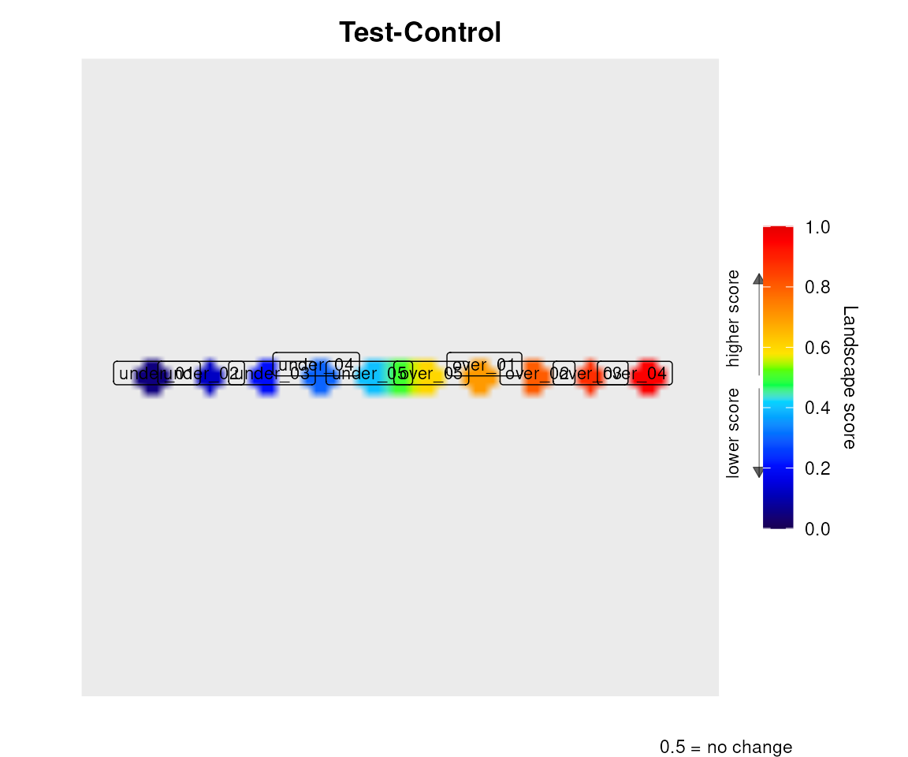
Two disconnected star clusters: cluster A (over-expressed) and
cluster B (under-expressed). Demonstrates bilateral permutation test
contours and leviDiff.
bim_net <- file.path(system.file(package="levi"), "extdata",
"bimodal_network.dat")
bim_expr <- file.path(system.file(package="levi"), "extdata",
"bimodal_expression.dat")
res_bim <- levi(
networkCoordinatesInput = bim_net,
expressionInput = bim_expr,
fileTypeInput = "dat",
geneSymbolInput = "ID",
readExpColumn = readExpColumn("Test-Control"),
contrastValueInput = 50,
resolutionValueInput = 20,
zoomValueInput = 50,
smoothValueInput = 5,
contourLevi = TRUE
)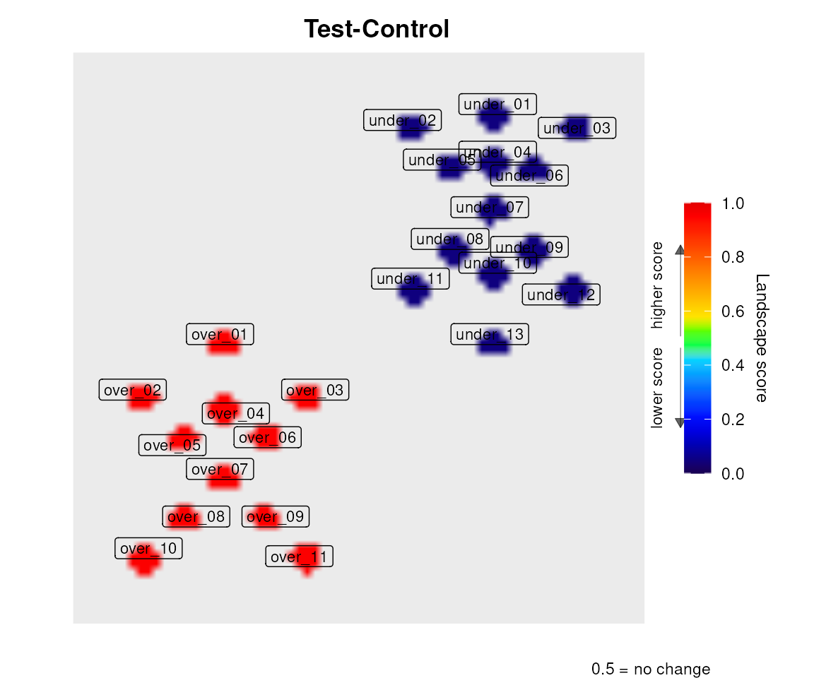
A 3×3 grid where all genes have identical expression (Test = Control = 100). Validates absence of false-positive peaks.
flat_net <- file.path(system.file(package="levi"), "extdata",
"flat_network.dat")
flat_expr <- file.path(system.file(package="levi"), "extdata",
"flat_expression.dat")
res_flat <- levi(
networkCoordinatesInput = flat_net,
expressionInput = flat_expr,
fileTypeInput = "dat",
geneSymbolInput = "ID",
readExpColumn = readExpColumn("Test-Control"),
contrastValueInput = 50,
resolutionValueInput = 20,
zoomValueInput = 50,
smoothValueInput = 5
)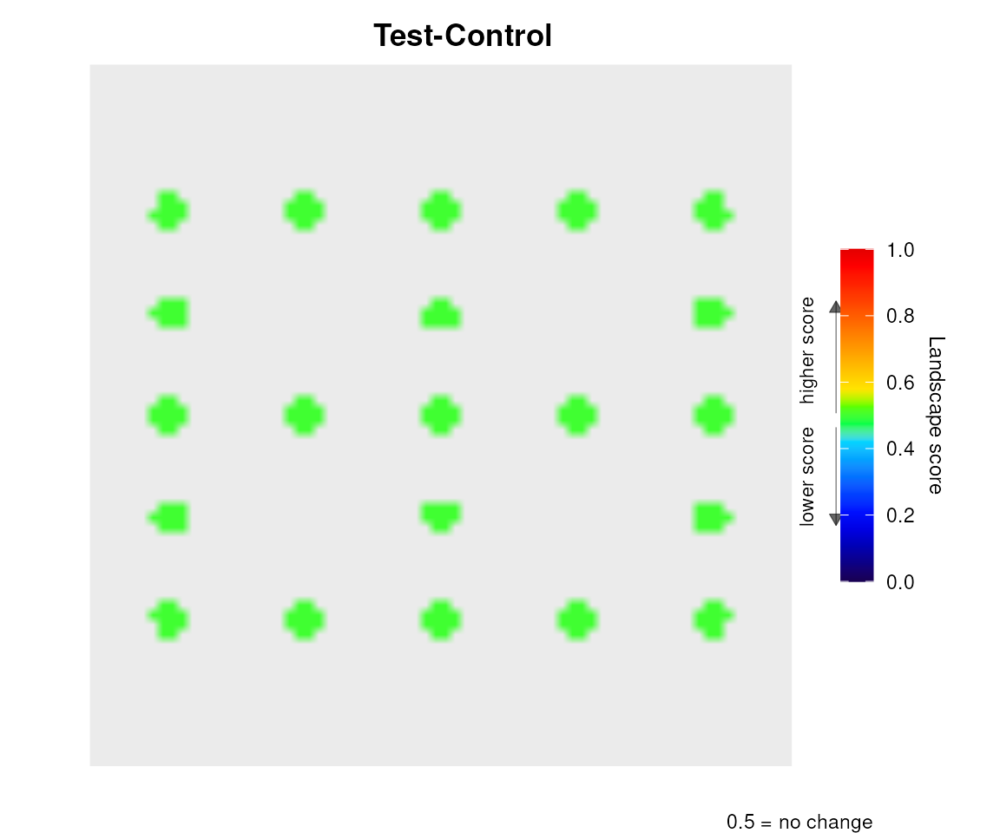
A 15-node network where only 5 genes have measured expression. Missing genes receive a mode-appropriate neutral value.
sparse_net <- file.path(system.file(package="levi"), "extdata",
"sparse_network.dat")
sparse_expr <- file.path(system.file(package="levi"), "extdata",
"sparse_expression.dat")
res_sparse <- levi(
networkCoordinatesInput = sparse_net,
expressionInput = sparse_expr,
fileTypeInput = "dat",
geneSymbolInput = "ID",
readExpColumn = readExpColumn("Test-Control"),
contrastValueInput = 50,
resolutionValueInput = 20,
zoomValueInput = 50,
smoothValueInput = 5
)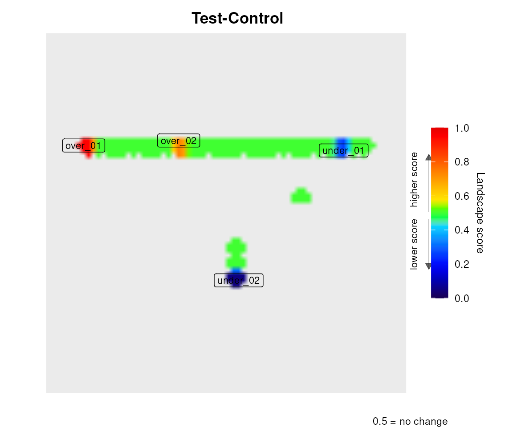
cat("Nodes in scores table:", nrow(res_sparse$scores),
"(expected 15)\n")
#> Nodes in scores table: 15 (expected 15)Every levi() call returns an invisible list with three
analytical objects:
# res_hub was computed above; the same six fields come back from every call.
names(res_hub)
#> [1] "comparison" "landscape" "scores" "peaks" "regions"
#> [6] "pvalues" "plot" "plot3d" "raw_pvalues" "metadata"
str(res_hub$scores) # Gene, X, Y, LandscapeScore, Rank
#> 'data.frame': 9 obs. of 5 variables:
#> $ Gene : chr "HUB" "N1" "N2" "N3" ...
#> $ X : num 0.5 0.5 0.7 0.5 0.3 0.85 0.85 0.15 0.15
#> $ Y : num 0.5 0.7 0.5 0.3 0.5 0.85 0.15 0.85 0.15
#> $ LandscapeScore: num 0.952 0.952 0.952 0.952 0.952 ...
#> $ Rank : int 1 2 3 4 5 6 7 8 9
str(res_hub$peaks) # Type (peak/valley), NearestGene, ..., Score
#> 'data.frame': 9 obs. of 5 variables:
#> $ Type : chr "peak" "peak" "peak" "peak" ...
#> $ NearestGene: chr "N3" "HUB" "N4" "N2" ...
#> $ MatrixRow : int 35 35 20 45 35 65 9 8 63
#> $ MatrixCol : int 21 29 35 35 45 8 9 63 63
#> $ Score : num 0.952 0.952 0.952 0.952 0.952 ...
str(res_hub$landscape) # the plotted surface: Var1, Var2, z
#> 'data.frame': 5184 obs. of 3 variables:
#> $ Var1: int 1 2 3 4 5 6 7 8 9 10 ...
#> $ Var2: int 1 1 1 1 1 1 1 1 1 1 ...
#> $ z : num NA NA NA NA NA NA NA NA NA NA ...
res_hub$pvalues # NULL here, because n_perm = 0
#> NULL
class(res_hub$plot) # the ggplot object
#> [1] "ggplot2::ggplot" "ggplot" "ggplot2::gg" "S7_object"
#> [5] "gg"
# Top 5 genes by landscape score
head(res_hub$scores[, c("Gene", "LandscapeScore", "Rank")], 5)
#> Gene LandscapeScore Rank
#> 1 HUB 0.9524 1
#> 2 N1 0.9524 2
#> 3 N2 0.9524 3
#> 4 N3 0.9524 4
#> 5 N4 0.9524 5
# Detected peaks and valleys
if (!is.null(res_bim$peaks) && nrow(res_bim$peaks) > 0)
res_bim$peaks[, c("Type", "NearestGene", "Score")]
#> Type NearestGene Score
#> 1 peak A5 0.9524
#> 2 peak A3 0.9524
#> 3 peak A4 0.9524
#> 4 peak A_HUB 0.9524
#> 5 peak A2 0.9524
#> 6 peak A1 0.9524
#> 7 valley B6 0.0476
#> 8 valley B2 0.0476
#> 9 valley B1 0.0476
#> 10 valley B_HUB 0.0476
#> 11 valley B4 0.0476
#> 12 valley B3 0.0476
#> 13 valley B5 0.0476Set n_perm > 0 to build a null distribution by
randomly shuffling expression pairs across measured network nodes, with
edge signals recalculated each time. The network and layout stay fixed.
By default (inference_unit = "region") regions are
redetected in every permutation and each observed region gets a p-value
against the maximum regional mass under the null; significant regions
are outlined in white. The legacy inference_unit = "cell"
instead draws contours from BY-adjusted p-values over both tails of
occupied cells: dashed (higher score) and dotted (lower score).
set.seed(42)
res_perm <- levi(
networkCoordinatesInput = grad_net,
expressionInput = grad_expr,
fileTypeInput = "dat",
geneSymbolInput = "ID",
readExpColumn = readExpColumn("Test-Control"),
contrastValueInput = 50,
resolutionValueInput = 20,
zoomValueInput = 50,
smoothValueInput = 5,
contourLevi = TRUE,
n_perm = 50,
perm_side = "both",
sig_level = 0.05
)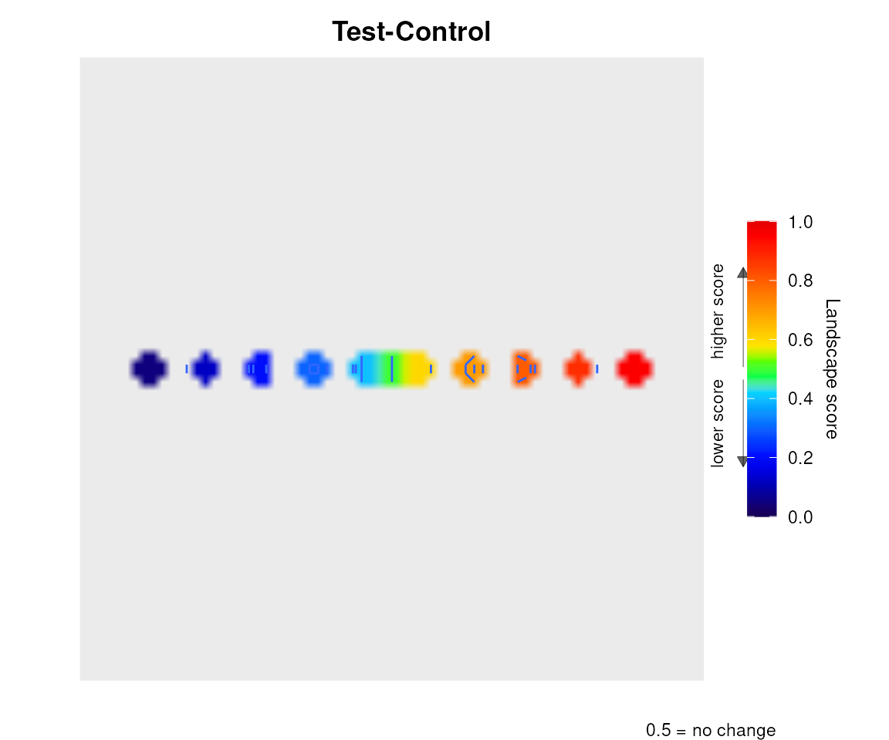
res_perm$regions$summary[, c("Region", "Direction", "Cells", "Mass",
"PSpatial", "Significant")]
#> Region Direction Cells Mass PSpatial Significant
#> 1 over_04 over 12 1.371304e-03 0.8627451 FALSE
#> 2 under_01 under 12 1.371304e-03 0.8627451 FALSE
#> 3 over_03 over 8 7.213581e-04 1.0000000 FALSE
#> 4 under_02 under 8 7.213581e-04 1.0000000 FALSE
#> 5 over_02 over 10 6.485895e-04 1.0000000 FALSE
#> 6 under_03 under 10 6.485895e-04 1.0000000 FALSE
#> 7 over_01 over 12 3.891537e-04 1.0000000 FALSE
#> 8 under_04 under 12 3.891537e-04 1.0000000 FALSE
#> 9 under_05 under 4 7.200790e-20 1.0000000 FALSE
#> 10 over_05 over 4 0.000000e+00 1.0000000 FALSEperm_side |
Regions outlined (region mode) | Contour(s) drawn (cell mode) |
|---|---|---|
"both" (default) |
Over and under | Dashed (over) + dotted (under) |
"over" |
Over only | Dashed only |
"under" |
Under only | Dotted only |
In cell mode the adjusted p-value matrices are available in
result$pvalues$over and result$pvalues$under
(dimensions: resolutionValue × resolutionValue). The
vignette levi_inference compares the two modes and the
sample-label and graph-based tests.
Provide multiple comparison strings to readExpColumn()
and levi() returns a list — one result per comparison.
hub_net <- file.path(system.file(package="levi"), "extdata",
"hub_network.dat")
mc_expr <- file.path(system.file(package="levi"), "extdata",
"hub_multicomp_expression.dat")
res_list <- levi(
networkCoordinatesInput = hub_net,
expressionInput = mc_expr,
fileTypeInput = "dat",
geneSymbolInput = "ID",
readExpColumn = readExpColumn("Cond_A-Cond_B",
"Cond_A-Cond_C"),
contrastValueInput = 50,
resolutionValueInput = 20,
zoomValueInput = 50,
smoothValueInput = 5
)
cat("Number of comparisons:", length(res_list), "\n")
#> Number of comparisons: 2
cat("Cond_A-Cond_B score range:",
round(diff(range(res_list[[1]]$scores$LandscapeScore)), 3), "\n")
#> Cond_A-Cond_B score range: 0.9
cat("Cond_A-Cond_C score range:",
round(diff(range(res_list[[2]]$scores$LandscapeScore)), 3), "\n")
#> Cond_A-Cond_C score range: 0.5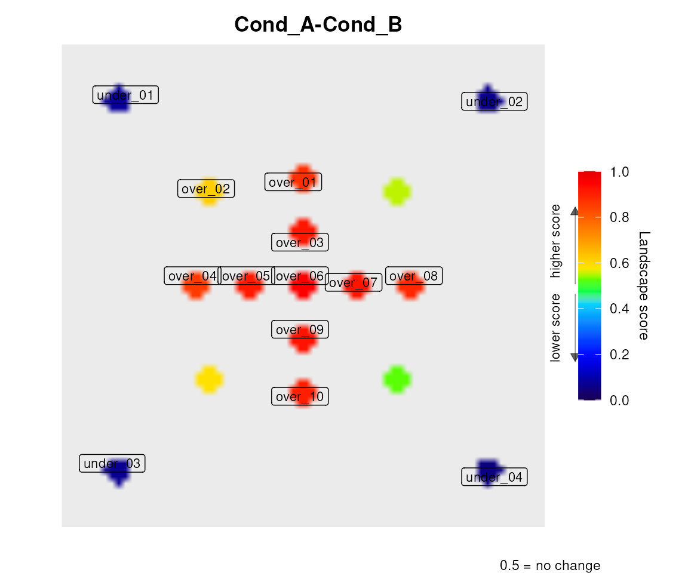
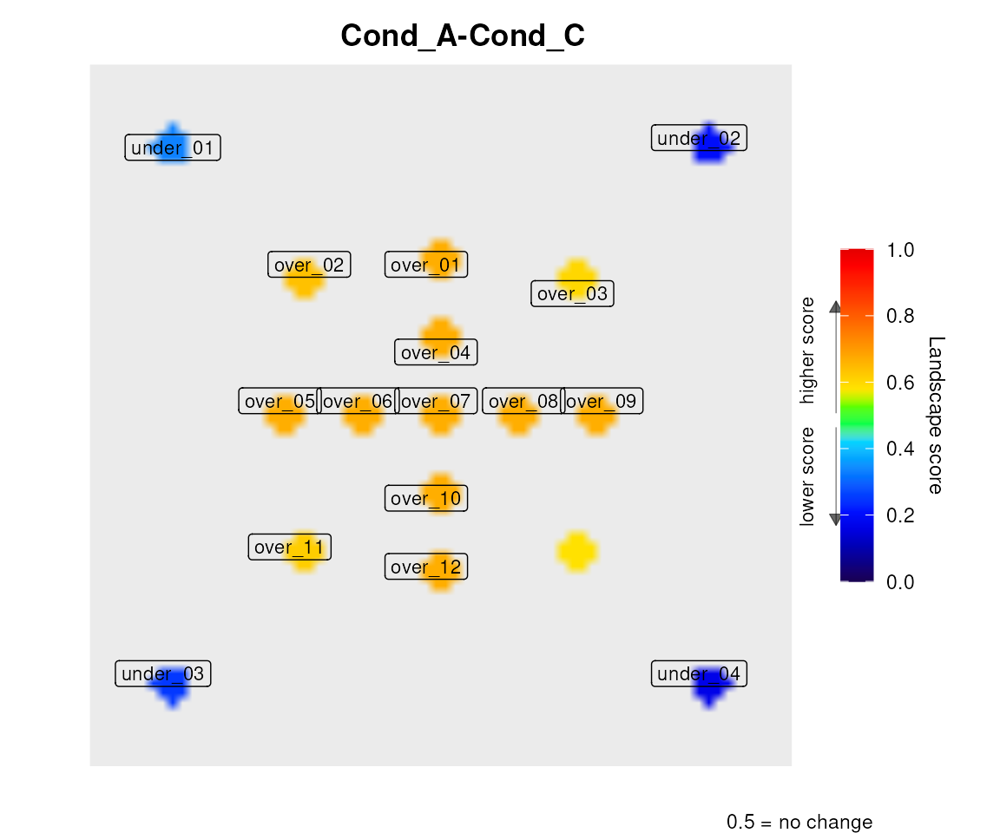
leviDiff() subtracts two landscapes cell-by-cell and
generates a diverging blue-to-red map of regional change. Blue = region
decreased; red = increased.
leviDiff(
res_list[[1]], res_list[[2]],
label_a = "Cond_A vs Cond_B",
label_b = "Cond_A vs Cond_C"
)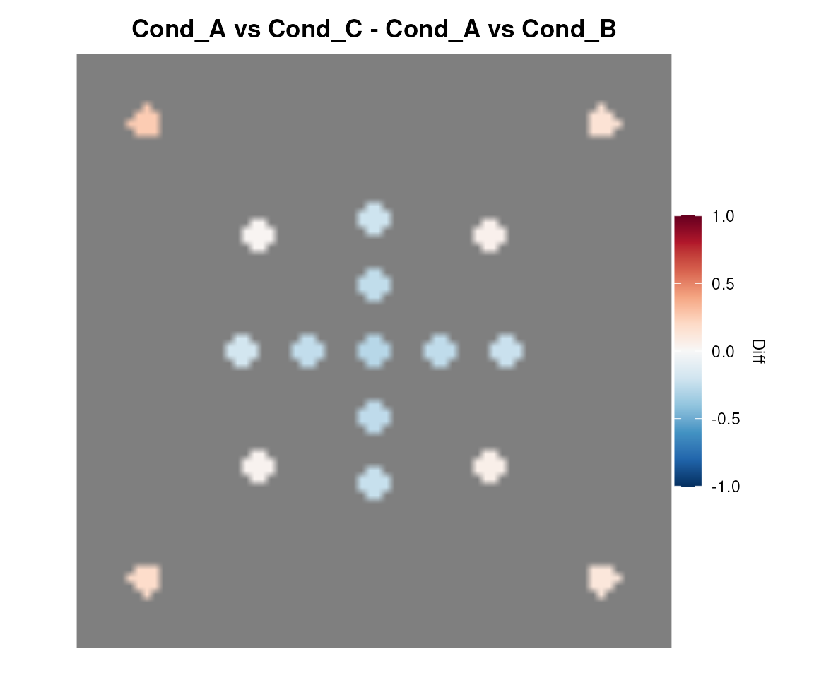
levi provides four adapter functions that convert
the outputs of DESeq2 (Love et al. 2014), edgeR (Robinson et al.
2010), limma (Ritchie et al. 2015) and Seurat (Hao et al. 2021)
directly into the data.frame format expected by
expressionInput.
library(DESeq2)
dds <- DESeqDataSetFromMatrix(counts, colData, design = ~condition)
dds <- DESeq(dds)
res_de <- results(dds, contrast = c("condition", "treated", "untreated"))
expr_df <- leviFromDESeq2(res_de, gene_col = "GeneID")
# Columns: GeneID, baseMean (abundance annotation), log2FoldChange (logFC signal)
levi(
expressionInput = expr_df,
# ...
readExpColumn = readExpColumn("log2FoldChange-log2FoldChange"),
signal_mode = "logfc"
)
library(edgeR)
dge <- DGEList(counts = counts, group = group)
dge <- calcNormFactors(dge)
fit <- glmQLFit(dge, design)
res <- glmQLFTest(fit, coef = 2)
expr_df <- leviFromEdgeR(res, gene_col = "GeneID")
# Columns: GeneID, logCPM (abundance annotation), logFC (logFC signal)
library(limma)
fit <- lmFit(eset, design)
fit2 <- contrasts.fit(fit, makeContrasts(TvsC = Tumor - Control,
levels = design))
fit2 <- eBayes(fit2)
expr_df <- leviFromLimma(fit2, coef = "TvsC", gene_col = "GeneID")
# Columns: GeneID, AveExpr (abundance annotation), logFC (logFC signal)
library(Seurat)
markers <- FindMarkers(seurat_obj,
ident.1 = "CD4_T",
ident.2 = "B_cell",
min.pct = 0.25)
expr_df <- leviFromSeurat(markers, gene_col = "GeneID")
# Columns: GeneID, Control (pct.2 annotation), Test (avg_log2FC signal)
library(SummarizedExperiment)
# Option A: condition labels from colData
expr_df <- leviFromSE(
se = my_se,
assay_name = "counts",
condition_col = "treatment",
test_level = "treated",
ctrl_level = "control",
gene_col = "GeneID"
)
# Option B: explicit sample names
expr_df <- leviFromSE(
se = my_se,
test_col = c("Sample1", "Sample3"),
ctrl_col = c("Sample2", "Sample4")
)The four differential-expression adapters accept a
data.frame with the columns their tool produces, and
leviFromSE() needs only
SummarizedExperiment, which levi already depends on. So
the whole conversion layer can be exercised without installing DESeq2,
edgeR, limma or Seurat:
genes <- c("HUB", paste0("N", 1:8))
# DESeq2-shaped results table
res_de <- data.frame(
baseMean = rep(1000, 9),
log2FoldChange = c(4.3, 4.1, 4.4, 4.2, 4.3, -5.3, -5.1, -5.4, -5.2),
row.names = genes)
expr_de <- leviFromDESeq2(res_de, gene_col = "GeneID")
head(expr_de, 3)
#> GeneID baseMean log2FoldChange
#> 1 HUB 1000 4.3
#> 2 N1 1000 4.1
#> 3 N2 1000 4.4
# edgeR-shaped and limma-shaped tables
leviFromEdgeR(data.frame(logFC = 4.3, logCPM = 10.2, row.names = "HUB"),
gene_col = "GeneID")
#> GeneID logCPM logFC
#> 1 HUB 10.2 4.3
leviFromLimma(data.frame(logFC = 4.3, AveExpr = 8.1, row.names = "HUB"),
gene_col = "GeneID")
#> GeneID AveExpr logFC
#> 1 HUB 8.1 4.3
# Seurat-shaped markers: pct.2 becomes Control, avg_log2FC becomes Test
leviFromSeurat(data.frame(avg_log2FC = 2.5, pct.2 = 0.3, row.names = "HUB"),
gene_col = "GeneID")
#> GeneID Control Test
#> 1 HUB 0.3 2.5
# A SummarizedExperiment, aggregated by condition label
counts <- matrix(c(200, 200, 200, 200, 200, 5, 5, 5, 5,
190, 210, 195, 205, 200, 6, 4, 5, 5,
10, 10, 10, 10, 10, 200, 200, 200, 200),
nrow = 9,
dimnames = list(genes, c("t1", "t2", "n1")))
se <- SummarizedExperiment::SummarizedExperiment(
assays = list(counts = counts),
colData = data.frame(condition = c("Tumor", "Tumor", "Normal"),
row.names = colnames(counts)))
expr_se <- leviFromSE(se, assay_name = "counts", condition_col = "condition",
test_level = "Tumor", ctrl_level = "Normal",
gene_col = "GeneID")
head(expr_se, 3)
#> GeneID Test Control
#> 1 HUB 195.0 10
#> 2 N1 205.0 10
#> 3 N2 197.5 10The output of any adapter goes straight into
expressionInput. Remember that a table carrying a
ready-made logFC must be used in single-column mode:
hub_net <- system.file("extdata", "hub_network.dat", package = "levi")
res_from_de <- levi(
expressionInput = expr_de,
networkCoordinatesInput = hub_net,
fileTypeInput = "dat",
geneSymbolInput = "GeneID",
readExpColumn = readExpColumn("log2FoldChange-log2FoldChange"),
resolutionValueInput = 40,
signal_mode = "logfc")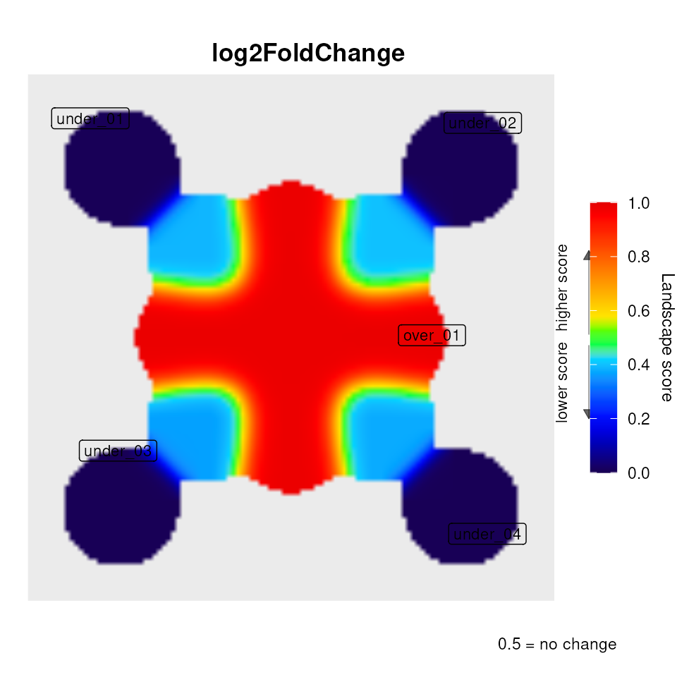
leviFromSTRING() retrieves a protein interaction network
from the STRING database (Szklarczyk et al.
2021) and computes a 2-D layout with igraph (Csárdi and Nepusz
2006) automatically. No manual file download is required.
library(levi)
# BiocManager::install("STRINGdb")
# MAPK pathway genes (human)
mapk_genes <- c("EGFR", "KRAS", "BRAF", "MAP2K1", "MAPK1",
"MAPK3", "RPS6KA1", "MYC", "JUN", "FOS")
set.seed(42) # layout is stochastic; fix seed for reproducibility
net <- leviFromSTRING(
genes = mapk_genes,
species = 9606, # human
score_threshold = 400, # medium confidence
layout = "fr" # Fruchterman-Reingold
)
# net$nodes : data.frame — name, x, y
# net$edges : data.frame — V1, V2
# net$graph : igraph object
levi(
expressionInput = my_de_results,
networkCoordinatesInput = net$nodes,
networkInteractionsInput = net$edges,
fileTypeInput = "stg",
geneSymbolInput = "GeneID",
readExpColumn = readExpColumn("log2FoldChange-log2FoldChange"),
signal_mode = "logfc"
)layout |
Algorithm | Best for |
|---|---|---|
"fr" |
Fruchterman-Reingold (Fruchterman and Reingold 1991) | General use, 50–500 nodes |
"kk" |
Kamada-Kawai (Kamada and Kawai 1989) | Small networks (≤ 100 nodes) |
"lgl" |
Large Graph Layout | Large networks (> 500 nodes) |
"dh" |
Davidson-Harel | Highest quality, slower |
"circle" |
Ring | Pathway-like chains |
| Organism | species |
|---|---|
| H. sapiens | 9606 |
| M. musculus | 10090 |
| R. norvegicus | 10116 |
| D. rerio | 7955 |
| D. melanogaster | 7227 |
| C. elegans | 6239 |
| S. cerevisiae | 4932 |
# Save to TSV — readable directly by levi() as file paths
write.table(net$nodes, "string_nodes.tsv",
sep = "\t", row.names = FALSE, quote = FALSE)
write.table(net$edges, "string_edges.tsv",
sep = "\t", row.names = FALSE, quote = FALSE)
# Save full R object (preserves igraph + layout)
saveRDS(net, "string_network.rds")
# Reload in future sessions
net2 <- readRDS("string_network.rds")
levi(networkCoordinatesInput = net2$nodes,
networkInteractionsInput = net2$edges,
fileTypeInput = "stg", ...)
# Or use STRINGdb local cache to avoid re-downloading raw files
net3 <- leviFromSTRING(genes, input_directory = "~/.stringdb_cache")The airway dataset (Himes et al. 2014) contains RNA-seq
counts from airway smooth muscle cells treated with dexamethasone (DEX)
vs untreated controls (4 cell lines, ~64k genes). We use DESeq2 to
identify DE genes and leviFromSTRING() to build the
interaction network.
BiocManager::install(c("airway", "DESeq2", "STRINGdb"))
library(airway); library(DESeq2); library(levi)
data(airway)
dds <- DESeqDataSet(airway, design = ~cell + dex)
dds <- DESeq(dds)
res <- results(dds, contrast = c("dex", "trt", "untrt"))
expr_df <- leviFromDESeq2(res)
# Top 80 DE genes — build STRING network
top80 <- head(expr_df$GeneID[order(abs(expr_df$log2FoldChange),
decreasing = TRUE)], 80)
set.seed(42)
net <- leviFromSTRING(top80, species = 9606, score_threshold = 400)
levi(
expressionInput = expr_df,
networkCoordinatesInput = net$nodes,
networkInteractionsInput = net$edges,
fileTypeInput = "stg",
geneSymbolInput = "GeneID",
readExpColumn = readExpColumn("log2FoldChange-log2FoldChange"),
signal_mode = "logfc",
n_perm = 500,
perm_side = "both"
)Biological interpretation: Nodes inside the dashed contour are network hubs whose entire neighbourhood is up-regulated by DEX treatment — strong candidates for pathway-level drug targets or effectors.
The ALL dataset (Chiaretti et al. 2004) (Affymetrix
HG-U95Av2, 128 patients) compares B-cell and T-cell subtypes of Acute
Lymphoblastic Leukemia. Data are RMA-normalized (log2 scale), so
signal_mode = "logfc" with logfc_k = 2 (tight
microarray fold-changes) is appropriate.
BiocManager::install(c("ALL", "limma", "STRINGdb"))
library(ALL); library(limma); library(levi)
data(ALL)
design <- model.matrix(~0 + ALL$BT)
colnames(design) <- c("B", "T")
contrast <- makeContrasts(B - T, levels = design)
fit <- lmFit(ALL, design)
fit2 <- contrasts.fit(fit, contrast)
fit2 <- eBayes(fit2)
expr_df <- leviFromLimma(fit2, coef = 1)
set.seed(7)
net <- leviFromSTRING(expr_df$GeneID, species = 9606,
score_threshold = 700, # high confidence
layout = "kk")
levi(
expressionInput = expr_df,
networkCoordinatesInput = net$nodes,
networkInteractionsInput = net$edges,
fileTypeInput = "stg",
geneSymbolInput = "GeneID",
readExpColumn = readExpColumn("logFC-logFC"),
signal_mode = "logfc",
logfc_k = 2
)The 3k PBMC dataset from 10x Genomics (10x Genomics
2016) is analysed with Seurat. FindMarkers identifies genes
with avg_log2FC values per cluster. Since scRNA-seq
fold-changes can reach ±5, use logfc_k = 0.5 for a softer
sigmoid.
BiocManager::install("TENxPBMCData")
install.packages("Seurat")
library(TENxPBMCData); library(Seurat); library(levi)
pbmc_sce <- TENxPBMCData("pbmc3k")
pbmc <- as.Seurat(pbmc_sce)
pbmc <- NormalizeData(pbmc)
pbmc <- FindVariableFeatures(pbmc)
pbmc <- ScaleData(pbmc)
pbmc <- RunPCA(pbmc)
pbmc <- FindNeighbors(pbmc)
pbmc <- FindClusters(pbmc, resolution = 0.5)
markers <- FindMarkers(pbmc,
ident.1 = "CD4 T cells",
ident.2 = "B cells",
min.pct = 0.25)
expr_df <- leviFromSeurat(markers, gene_col = "GeneID")
set.seed(21)
net <- leviFromSTRING(rownames(markers), species = 9606,
score_threshold = 400, layout = "fr")
levi(
expressionInput = expr_df,
networkCoordinatesInput = net$nodes,
networkInteractionsInput = net$edges,
fileTypeInput = "stg",
geneSymbolInput = "GeneID",
readExpColumn = readExpColumn("avg_log2FC-avg_log2FC"),
signal_mode = "logfc",
logfc_k = 0.5
)After computing the landscape, leviEnrich() tests the
top-scoring genes (peaks) and bottom-scoring genes (valleys) for GO and
KEGG enrichment using clusterProfiler.
BiocManager::install(c("clusterProfiler", "org.Hs.eg.db"))
enrich_res <- leviEnrich(
result = res_hub,
top_n = 20, # top-scoring genes (peaks)
bottom_n = 20, # bottom-scoring genes (valleys)
organism = "hsa", # KEGG organism code
orgdb = "org.Hs.eg.db",
keytype = "SYMBOL",
pval_cutoff = 0.05,
types = c("GO_BP", "KEGG")
)
# enrich_res$over — enrichment on peak genes
# enrich_res$under — enrichment on valley genes
# Dotplots are printed automatically
# Access results programmatically:
head(as.data.frame(enrich_res$over$GO_BP))When plotly is installed, plot3d = TRUE
generates an interactive 3-D surface alongside the standard 2-D heatmap.
Users can rotate, zoom, and inspect individual scores.
install.packages("plotly")
levi(
networkCoordinatesInput = hub_net,
expressionInput = hub_expr,
fileTypeInput = "dat",
geneSymbolInput = "ID",
readExpColumn = readExpColumn("Test-Control"),
contrastValueInput = 50,
resolutionValueInput = 20,
zoomValueInput = 50,
smoothValueInput = 5,
plot3d = TRUE
)The Shiny-based GUI provides interactive access to all levi features:
The side panel has a File tab (network and expression
inputs, colour scale, contour, 3D surface, gene highlight, Run)
and a Settings tab (contrast, resolution, smoothing, zoom,
signal mode and the permutation test). The main panel shows the 2D
landscape and the 3D surface in two tabs, and the tables
Genes, Node scores, Peaks and valleys and
Regions in four more. The interface calls levi()
with the chosen parameters, so it agrees with script mode.
GUI-only features: - Brush selection — click and
drag on the 2D map to select an area; the summed score is shown as
Expression area and the genes under the selection fill the
Genes tab (shown only while the 2D map is in front). -
Gene highlight — list gene names to circle them on the
map in a chosen colour. - Peak labels — checkbox
overlays gene names at detected peak/valley positions (uses
ggrepel if installed). - 3D surface —
interactive surface with an HTML download that keeps the current view,
and the camera printed as code for leviSave3D(). -
Progress indicator — shown while the landscape or the
permutation test is computed. - Download buttons — 2D
map (TIFF, BMP, JPEG, PNG), 3D surface (HTML), node score, peak and
region tables (CSV).
The interface is described with screenshots in
vignette("levi").
| Parameter | Range | Effect |
|---|---|---|
contrastValueInput |
0–100 | Contrast stretch of the colour scale |
resolutionValueInput |
1–100 | Grid resolution (higher = finer landscape) |
zoomValueInput |
0–100 | Spatial zoom (higher = wider neighbourhood) |
smoothValueInput |
0–100 | Gaussian kernel width |
# Multicolor (default)
levi(..., setcolor = "default")
# Two-color options
levi(..., setcolor = "purple_pink")
levi(..., setcolor = "green_blue")
levi(..., setcolor = "blue_yellow")
levi(..., setcolor = "pink_green")
levi(..., setcolor = "orange_purple")
levi(..., setcolor = "green_marine")
sessionInfo()
#> R version 4.6.1 (2026-06-24)
#> Platform: x86_64-pc-linux-gnu
#> Running under: Ubuntu 24.04.4 LTS
#>
#> Matrix products: default
#> BLAS: /usr/lib/x86_64-linux-gnu/openblas-pthread/libblas.so.3
#> LAPACK: /usr/lib/x86_64-linux-gnu/openblas-pthread/libopenblasp-r0.3.26.so; LAPACK version 3.12.0
#>
#> locale:
#> [1] LC_CTYPE=en_US.UTF-8 LC_NUMERIC=C
#> [3] LC_TIME=en_US.UTF-8 LC_COLLATE=en_US.UTF-8
#> [5] LC_MONETARY=en_US.UTF-8 LC_MESSAGES=en_US.UTF-8
#> [7] LC_PAPER=en_US.UTF-8 LC_NAME=C
#> [9] LC_ADDRESS=C LC_TELEPHONE=C
#> [11] LC_MEASUREMENT=en_US.UTF-8 LC_IDENTIFICATION=C
#>
#> time zone: Etc/UTC
#> tzcode source: system (glibc)
#>
#> attached base packages:
#> [1] stats graphics grDevices utils datasets methods base
#>
#> other attached packages:
#> [1] levi_1.99.0 BiocStyle_2.40.0
#>
#> loaded via a namespace (and not attached):
#> [1] SummarizedExperiment_1.42.0 gtable_0.3.6
#> [3] xfun_0.61 bslib_0.12.0
#> [5] ggplot2_4.0.3 htmlwidgets_1.6.4
#> [7] Biobase_2.72.0 lattice_0.23-1
#> [9] vctrs_0.7.3 tools_4.6.1
#> [11] generics_0.1.4 stats4_4.6.1
#> [13] parallel_4.6.1 tibble_3.3.1
#> [15] pkgconfig_2.0.3 Matrix_1.7-6
#> [17] RColorBrewer_1.1-3 S7_0.2.2
#> [19] desc_1.4.3 S4Vectors_0.50.3
#> [21] lifecycle_1.0.5 compiler_4.6.1
#> [23] farver_2.1.2 stringr_1.6.0
#> [25] textshaping_1.0.5 Seqinfo_1.2.0
#> [27] codetools_0.2-20 htmltools_0.5.9
#> [29] sass_0.4.10 yaml_2.3.12
#> [31] pkgdown_2.2.1 pillar_1.11.1
#> [33] jquerylib_0.1.4 BiocParallel_1.46.0
#> [35] DelayedArray_0.38.2 cachem_1.1.0
#> [37] abind_1.4-8 tidyselect_1.2.1
#> [39] digest_0.6.39 stringi_1.8.9
#> [41] dplyr_1.2.1 reshape2_1.4.5
#> [43] bookdown_0.48 labeling_0.4.3
#> [45] fastmap_1.2.0 grid_4.6.1
#> [47] cli_3.6.6 SparseArray_1.12.2
#> [49] magrittr_2.0.5 patchwork_1.3.2
#> [51] S4Arrays_1.12.0 withr_3.0.3
#> [53] scales_1.4.0 rmarkdown_2.32
#> [55] XVector_0.52.0 matrixStats_1.5.0
#> [57] igraph_2.3.3 otel_0.2.0
#> [59] ragg_1.5.2 evaluate_1.0.5
#> [61] knitr_1.52 GenomicRanges_1.64.0
#> [63] IRanges_2.46.0 rlang_1.3.0
#> [65] isoband_0.3.0 Rcpp_1.1.2
#> [67] glue_1.8.1 xml2_1.6.0
#> [69] BiocManager_1.30.27 BiocGenerics_0.58.1
#> [71] jsonlite_2.0.0 R6_2.6.1
#> [73] plyr_1.8.9 MatrixGenerics_1.24.0
#> [75] systemfonts_1.3.2 fs_2.1.0Signal interpretation: ratio preserves Test/(Test +
Control), with no min-max rescaling; equal nonzero inputs give 0.5.
expressionLog = TRUE back-transforms log2 inputs only in
this mode. A single ratio column means abundance/(abundance + 1), not a
comparison with a control. logfc accepts two log-scale
columns or one already computed logFC, mapping zero to 0.5.
zscore centres on the mean logFC of measured network
support points, not on biological absence of change. Missing
measurements are assigned 0.5 and listed in
result$metadata. Gaussian smoothing mixes neighbouring
signals, so these baseline statements apply to the input signals and to
uniformly neutral networks.
Permutation inference is conditional on the fixed network and layout.
Measured gene values are shuffled as pairs and edge midpoints are
recalculated; missing positions stay fixed. In the default regional mode
the maximum regional mass over both directions is the reference
statistic, which controls the search across regions without a further
adjustment. In cell mode both tails over occupied cells form one
multiple-testing family per comparison, adjusted with
p_adjust_method (“BY” by default);
result$raw_pvalues retains the unadjusted values.
perm_side selects the displayed side without changing
either family. This is not a test of differential expression between
biological replicates; increasing n_perm alone does not
validate inferential use. Calibration across networks, layouts and
missingness patterns still requires simulation studies.
Call set.seed() before permutation runs.
result$metadata records the RNG state, network,
coordinates, signal mode, grid settings and software versions.
leviDiff() rejects incompatible metadata or grid
coordinates. For DESeq2, edgeR and limma adapters, select the logFC
column against itself with signal_mode = "logfc"; abundance
annotations are not control measurements. For edgeR, select the contrast
in glmLRT() or glmQLFTest() before calling
leviFromEdgeR() on the resulting test object. KEGG uses the
supplied universe, converting both selected genes and background to
ENTREZID with the same OrgDb.